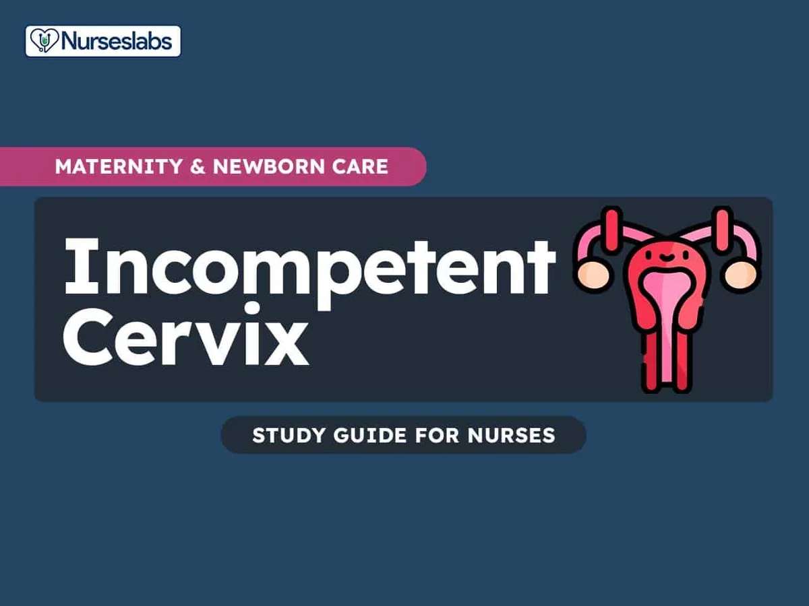

Expanded Nursing Uganda Explanation
Vulva, Vagina and Cervix should be reviewed through safe maternal and newborn assessment, early recognition of danger signs, respectful communication and timely referral. Connect the definition to vital signs, bleeding, fetal or newborn wellbeing, patient education and local protocol requirements.
01 EXTERNAL GENITALIA
Female external genitalia (the vulva) include the mons pubis, labia majora, labia minora, clitoris, vestibule, the greater vestibular glands (Bartholin’s glands) and bulbs of the vestibule
Mons Pubis: The mons pubis is a rounded, fatty region located over the pubic bone. It becomes covered with hair after puberty and acts as a cushion during sexual intercourse.
Labia Majora (‘greater lips’) : These are two prominent, fatty skin folds that extend from the mons pubis to the perineum. They protect the delicate structures within and typically become thinner with age or after childbirth.
Labia Minora (‘lesser lips’) : These are smaller, thinner, and more pigmented skin folds situated inside the labia majora. They encircle the vaginal and urethral openings and contain numerous sweat and oil glands . The labia minora are composed of erectile tissue, which becomes engorged during sexual arousal, and they are highly sensitive to touch. Anteriorly, each labium minus divides into two parts: the upper layer passes above the clitoris to form along with its fellow fold, the prepuce, which overhangs the clitoris. The prepuce is a retractable piece of skin which surrounds and protects the clitoris. The lower layer passes below the clitoris to form with its fellow the frenulum of the clitoris.
Clitoris : This is a highly sensitive and erectile organ located at the top of the vulva, partially hidden beneath the upper junction of the labia minora. It is analogous to the male penis and is a central focus of sexual response, becoming swollen with blood and sensitive to stimulation during sexual arousal. The clitoris is a small rudimentary sexual organ corresponding to the male penis. The visible knob-like portion is located near the anterior junction of the labia minora, above the opening of the urethra and vagina. Unlike the penis, the clitoris does not contain the distal portion of the urethra and functions solely to induce the orgasm during sexual intercourse.
Vestibule : The vestibule is a space or cleft enclosed by the labia minora. It contains the openings to the urethra (the tube that allows urine to exit the body) and the vagina.
Vaginal Opening (Introitus) : This is the entrance to the vagina , occupies the posterior two-thirds of the vestibule. In many women, this opening is partially closed by a membrane called the hymen. The orifice is partially closed by the hymen, a thin membrane that tears during sexual intercourse. The remaining tags of hymen are known as the ‘ carunculae myrtiformes ’ because they are thought to resemble myrtle berries.
The urethral orifice: This lies 2.5 cm posterior to the clitoris and immediately in front of the vaginal orifice. On either side lie the openings of the Skene’s ducts, two small blind-ended tubules 0.5 cm long running within the urethral wall.
The greater vestibular glands (Bartholin’s glands) are two small glands that open on either side of the vaginal orifice and lie in the posterior part of the labia majora. They secrete mucus, which lubricates the vaginal opening. The duct may occasionally become blocked, which can cause the secretions from the gland to accommodate within it and form a cyst.
Blood supply: The blood supply comes from the internal and the external pudendal arteries. The blood drains through corresponding veins.
Lymphatic drainage: Lymphatic drainage is mainly via the inguinal glands.
Innervation: The nerve supply is derived from branches of the pudendal nerve.
02 Functions of the Vulva
- Protection : The labia majora act as a protective barrier for the internal reproductive organs, helping to shield them from injury and infection.
- Sexual Arousal : The clitoris and the highly sensitive nerve endings in the labia minora play a crucial role in sexual arousal and pleasure.
- Reproduction : The vaginal opening allows for sexual intercourse and serves as the birth canal during childbirth.
- Urination : The urethral opening within the vestibule allows for the passage of urine from the bladder to the outside of the body.
- Secretion : The vulva contains numerous sweat and oil glands that secrete fluids to keep the area moist and lubricated.
- Childbirth : During childbirth, the vulva and vaginal opening stretch to accommodate the passage of the baby.
Mother x has come for a postnatal examination. You are required to do vulva swabbing on her. Task; Perform Vulva Swabbing Objectives. 1. Set requirements for Vulva swabbing. 2. Perform the Vulva swabbing procedure.
Requirements
- Top shelf Bottom shelf Bedside
- – A pack containing – Bed pan – Screens
- – 2 Bowls – Mackintosh – Hand washing equipment.
- – Receivers – Sanitary pad
- – 1 drum of swabs
- – 1 drum of drapes
Procedure
- Steps Action Rationale
- 1. Apply soft skills. To maintain relationship.
- 2. Offer a bed pan if necessary For comfort and accurate procedure
- 3. Position the patient in a dorsal position and cover the trunk. To perform the procedure
- 4. Place mackintosh and under the mother’s buttocks. To protect the bedding.
- 5. Assemble the equipment on the top shelf. To save time.
- 6. Wash hands and put on sterile gloves. To prevent cross infection.
- 7. Drape the thighs. To provide a sterile area.
- 8. Inspect the Vulva for any discharge and abnormality For appropriate interventions.
- 9. Place 5 swabs in the dominant bowl and leave a swab in the hand for drying the mother. To prevent contamination.
- 10. For each part in the following order; Left labia majora Left labia minora Right labia majora Right labia minora The vestibule including the vaginal orifice. To prevent infection.
- 11. Dry the vulva and apply a sanitary pad as required. For promotion of hygiene
- 12. Turn the patient on the left side. Dry the perineum. To prevent irritation.
- 13. Leave the mother in a comfortable position. To promote hygiene.
- 14. Clear away the equipment and wash hands.
- 15. Document the findings For proper follow up.
03 INTERNAL GENITALIA
The internal reproductive system comprises the vagina , cervix , uterus , fallopian tubes , and ovaries , all situated within the pelvic region.
The vagina is a fibro-muscular tube extending from the vulva’s vestibule to the cervix .
The vagina is a fibro-muscular tube which is part of the internal organs of the reproductive system . It extends from the vestibule below to the cervix above, running in an upward and backward direction. The upper end of the vagina is called the vault.
Approximately 10 cm in length, it can extend further during childbirth. The vaginal mucous membranes secrete fluids that cleanse and maintain an acidic environment. The hymen may cover the vaginal opening, breaking during the first penetrative sexual encounter.
Shape :
- The vagina is a potential tube.
- Its walls are in close contact but can be separated during intercourse, vaginal examination, and childbirth.
Size :
The posterior wall is longer and measures 10cm, but the anterior wall measures 7.5cm because the uterus enters it at right angles and then bends forward, thus encroaching on the anterior wall.
Gross Structure:
The vagina has four fornices:
- The posterior fornix, which is the deepest.
- The anterior fornix, which is fairly deep.
- The lateral fornices( left and right), which are shallow.
Microscopic Structure of the Vagina:
- Mucosa : Composed of stratified squamous non-keratinized epithelium which falls into folds known as rugae . These give the vagina an ability to stretch when needed.
- Vascular Connective Tissue : Found beneath the epithelium and contains blood vessels, lymph vessels, and nerves.
- Muscular Coat : A thin but strong layer (smooth muscle) composed of inner circular and outer longitudinal fibres.
- Fascia/Adventitia : This forms the outer protective coat and is continuous with the pelvic fascia.
04 Contents of the Vagina:
The vagina itself does not contain any glands but is kept moist by mucus and a transudation from underlying blood vessels through the epithelium and Bartholin’s secretions . The vaginal media is acidic (pH 4.5 ), made possible by the presence of Doderlein’s bacilli which produce lactic acid after the action of glycogen. These are normal lactobacilli that help to prevent infection. The acidic media helps prevent infection.
Lymphatic Drainage: Into inguinal and sacral glands.
Nerve Supply:
By nerves derived from the pelvic plexus . The vaginal nerves follow the vaginal arteries to supply the vaginal walls and the erectile tissue of the vulva.
Relations to the Vagina:
- Laterally : Pubococcygeus muscle below and pelvic fascia above.
- Inferiorly : Vulva.
- Superiorly : Cervix.
- Anteriorly : Upper half of the bladder, lower half of the urethra.
- Posteriorly : Upper third – pouch of Douglas; Middle third – rectum; Lower third – perineal body.
Functions of the Vagina:
- Exit for the menstrual flow.
- Entrance for spermatozoa.
- Exit for products of conception.
- Supports the uterus.
- Prevents ascending infections.
- Receives the penis and sperm during sexual intercourse.
- Provides the pathway for the foetus during vaginal delivery.
- List two contents of the vagina.
- List four fornices of the vagina.
- Describe the microscopic structure of the vagina.
- List five organs that are related to the vagina.
- Outline five functions of the vagina. ****
A mother reports to the labour ward with labour like pains. You are required to do a vaginal examination to confirm labour.
TASK: CARRY OUT VAGINAL EXAMINATION
- To carry out Vaginal examination to mother in labour.
Requirement
- Same as for internal pelvic assessment .
Procedure
- Step Action Rationale
- 1. Welcome and explain the procedure to the mother. (Apply soft skills) To allay anxiety and promote corporation
- 2. Request mother to empty the bladder. For comfort and easy examination.
- 3. Put on clean gloves. To protect self.
- 4. Assist mother into dorsal position. Visualization of the parts.
- 5. Place a mackintosh and draw sheet under the buttocks. Protection of beddings.
- 6. Remove gloves, wash hands and dry them and Put on sterile gloves.
- 7. Observe external genitalia for; * Varicose veins, Oedema, Warts or sores. * Scars from previous episiotomy, tear or excision * Discharge or bleeding. * Colour and odour of discharge or amniotic fluid if membranes ruptured. To detect abnormalities.
- 8. Swab the vulva. To prevent ascending infection.
- 9. Lubricate the index and middle insert them into the vagina. To assess the state of the vagina.
- 10. Feel the vaginal wall with scars, and any abnormality. To exclude abnormalities.
- 11. Locate the cervical as for; * Effacement. * Dilatation. * Fore waters. To assess the state of the cervix and membranes.
- 12. Feel for the vault, sutures and fontanels, Position, Caput and moulding. To determine the degree of moulding.
- 13. Clean the mother. Leave her comfortable and provide a clean pad. To provide comfort.
- 14. Thank and explain findings to her.
- 15. Clear away, remove gloves and document findings. For continuity of care.
05 Cervix
The cervix , the most inferior part of the uterus , extends into the vaginal canal . It connects the uterus to the vagina , facilitating the passage of menstrual contents, sperm, and the baby during childbirth.
It makes up 1/3 of the uterus from the isthmus above to the vagina below. It is also known as the neck of the uterus .
The cervix has two main portions:
- The ectocervix (visible during gynecologic examination) and
- The endocervix (a tunnel through the cervix leading to the uterus).
- During Childbirth : The cervix undergoes changes, becoming soft and dilating to accommodate the fetus. Cervical dilation is indicative of labor initiation.
Situation : It is situated in the true pelvis.
Shape : It is cylindrical in shape, and the canal is spindle-shaped.
Size : It measures 2.5cm to 3.5cm before pregnancy and 3.5cm to 4cm in women with parity.
Gross Structure of the cervix : The cervix consists of the following parts:
- Supra-vaginal portion : The part above the vagina.
- Infra-vaginal portion : Found in the vault of the vagina, and enters it at a right angle provided that the uterus is anteverted and anteflexed.
- Internal os/endocervix : Which opens into the cavity of the uterus.
- The ectocervix or exocervix : The outer part of the cervix that can be seen during a speculum examination. It has an external os which opens into the vagina.
- Endocervical canal : The part between the external and internal os. The overlapping border between the endocervix and ectocervix is called the transformation zone .
Microscopic Structure of the Cervix : The cervix consists of the following layers of tissue:
- An inner lining of the endometrium: Arranged in a pattern of crypts (folds) giving it a tree-like appearance called arborvitae . These folds prevent sperms from flowing back into the vagina. The crypts contain endocervical glands that are lined by columnar epithelium that secretes cervical mucus.
- The endometrium : Made up of endocervical glands which are sub columnar basal cells, rasmus glands, mucus-secreting cells, and ciliated columnar cells. The endometrium is not the same as that of the uterus because it does not slough/shed during menstruation.
- A middle layer of muscular tissue: Arranged into circular and longitudinal fibres. The circular fibres help in dilatation of the cervical os during labour.
- An outer layer of peritoneum : Covering that part of the cervix which lies anteriorly and posteriorly from where it is reflected up over the bladder.
Blood Supply : By uterine arteries.
Venous Drainage : Uterine veins.
Lymphatic Drainage : Into the internal iliac and sacral glands.
Nerve Supply : By sympathetic and parasympathetic nerves from the Lee-Franken Hauser plexus.
Supports :
- Cardinal ligaments (transverse cervical ligaments ): Extending from the lateral walls of the pelvis.
- Pubo cervical ligament : Running forward from the cervix to the pubic bone.
- Utero sacral ligament : Extending from the cervix, passing backwards to the sacrum.
Relations to the Cervix :
- Anteriorly : By the utero-vesicle pouch and bladder.
- Posteriorly : The rectal uterine pouch or pouch of Douglas and rectum.
- Laterally : The broad ureters and uterine arteries.
Functions of the Cervix :
- Limits microbial access to the uterus: By the mucus and during pregnancy it is sealed by the operculum.
- It dilates and withdraws during labour: To enable vaginal delivery of the fetus and placenta.
- The tree of life “arborvitae” prevents sperms deposited during sexual intercourse from flowing bac k: Due to the crypts and cervical mucus.
- It is an exit to the menstrual flow .
- The cervical glands provide nutrition to the sperms .
- Produces fertile mucus that eases movement of the sperms .
- Explain two functions of the arborvitae.
- State two functions of the cervix.
- Outline four reasons why the cervix is examined.
06 Scenario for Practical Procedure :
A 35-year-old mother reports to a gynaecological clinic with a history of dyspareunia.
Task : Performing visual inspection with acetic acid .
- To observe any changes in the squamous columnar junction with application of acetic acid.
Requirements :
As for internal pelvic assessment, but in addition, a Cusco speculum and a sponge holding forceps are important in the procedure.
Procedure
- Steps Action Rationale
- 1 Welcome and explain the procedure to the mother. (Soft skills apply) To allay anxiety and Promote corporation.
- 2 Request mother to empty the bladder. For comfort.
- 3 Put on clean gloves and assist mother into dorsal position Visualization of the parts.
- 4 Place a mackintosh and draw sheet under the buttocks. Protection of beddings.
- 5 Remove the clean gloves, wash hands and dry them then Put on sterile gloves. To prevent infections
- 6 Do inspection of the genitalia for: >> Varicose veins, Oedema, Warts or sores. >> Discharge or bleeding. To detect abnormalities.
- 7 Swab the vulva. To prevent ascending infection.
- 8 Lubricate the cusco’s speculum, insert it into the vagina and lock it. To view the cervix.
- 9 Inspect the cervix for discharge, blood, sores or new growth. For proper management.
- 10 Clean the cervix gently with cotton using a sponge holding forcep.
- 11 Apply acetic acid on the cervix and observe. In case of pap smear, obtain the specimen of cervical mucus. To detect changes in the squamous epithelial junction.
- 12 Release the screw of Cuscos Speculum and let it out.
- 13 Clean the mother and make her comfortable. To prevent infections
- 14 Clear away and tell the mother findings.
- 15 Remove gloves and wash hands.
- 16 Document findings.
Note.
- If Pap smear is to be done, follow the same steps but obtain a specimen of cervical discharge for examination,
- The epithelium of the cervix undergoes squamous metaplasia at the transformation zone and can form endocervical ectropion and cancer.
Click here for Uterus, Fallopian tubes and Ovaries notes
07 Nursing Uganda Clinical Lens
Use Vulva, Vagina and Cervix as a practical nursing topic, not only a memorized definition. Read the topic through the safety of two patients: the mother and the fetus or newborn.
- What to understand first: define vulva, vagina and cervix, identify the normal or expected pattern, then explain what changes when the patient is unwell.
- Why it matters in care: the nurse must recognize risk early, explain findings clearly, document accurately and know when to escalate.
- How to revise it: connect each point to assessment, nursing diagnosis or care problem, intervention, rationale and evaluation.
08 Assessment Guide
- Maternal vital signs, bleeding, pain, contractions, uterine tone and danger signs.
- Fetal or newborn wellbeing, feeding, temperature, breathing and activity.
- History of pregnancy, parity, medications, allergies, investigations and referral risks.
09 Nursing Priorities, Rationales and Outcomes
- Recognize danger signs early and escalate without delay.
- Provide respectful communication, privacy, infection prevention and clear documentation.
- Teach the mother what to monitor at home and when to return urgently.
The rationale for these priorities is patient safety: nursing actions should prevent deterioration, reduce discomfort, support recovery and create clear evidence for the next caregiver.
- Expected outcome: Mother and baby remain stable, danger signs are acted on early, and the family understands follow-up instructions.
10 Patient Teaching and Revision Check
- Explain vulva, vagina and cervix in simple language the patient or caregiver can repeat back.
- Teach warning signs, medicine or follow-up instructions, hygiene or lifestyle points where relevant.
- For exams, prepare a short answer using: definition, causes or risk factors, signs, assessment, management, complications and prevention.
- For ward practice, document baseline findings, actions taken, patient response and the plan for review.
Illustrations and Diagrams (1)

Related Video Lectures
Watch nursing lecture videos on YouTube for this topic. Opens in a new tab.
Watch on YouTubeExternal link: YouTube may use its own cookies and terms. Nursing Uganda is not affiliated with YouTube.